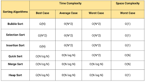

In computer science many algorithms were made for the sake of efficiency. By making a more time efficient method a developer can make their
website make more calls and store more data. But that's not what I want to talk about today. Today I wish to talk about the inefficient
sorting methods. The ones that don't work, the ones that do and why they shouldn't be implemented. There are many different ways to sort
an array. If one wanted to they could make a new one now it is very simple. Just take one of the three sins of bad sorting algorithms.
The three sins of bad sorting algorithms
Packet/information loss
Time complexity is too high
Never actually sorts
You may ask what benefit we get from making inefficient sorting methods. Well it's quite simple. By making a sorting method inefficient it
shows a deep understanding of how sorting methods work because to make something work intentionally bad one must understand how it is good.

Sorting table of normal sorting algorithims